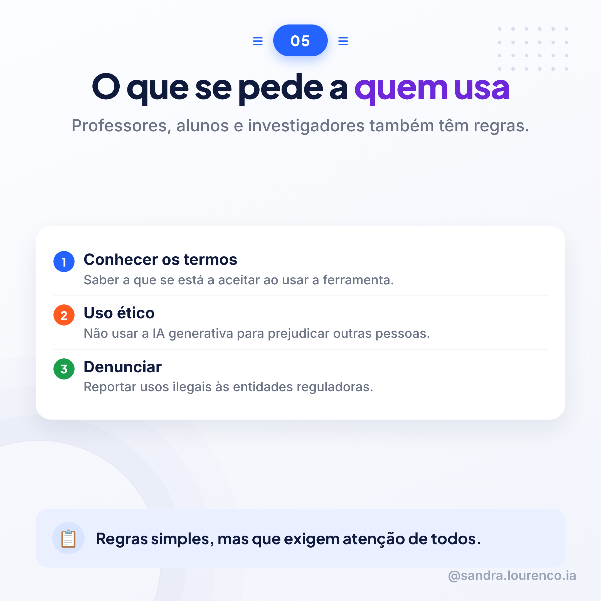
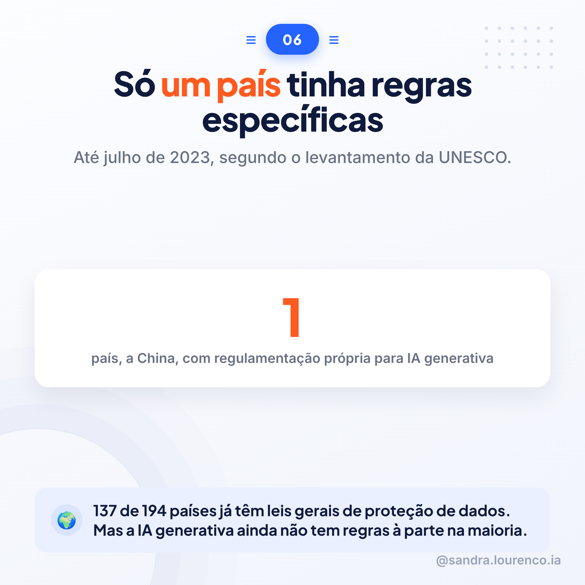

Tema Sandra: EducaçãoFonte: Guia UNESCO 2023 (IAGen)9 slides
Carrossel sobre quem tem de cumprir regras no uso da inteligência artificial generativa na educação: governos, fornecedores de ferramentas, escolas e quem as usa no dia a dia.
Slides, pela ordem
9 imagens
01 · Capa
02
03
04
05

06

07
08
09 · Fecho
Legendas e guião
copiar e colar
💼LinkedIn
Em 2023, só um país no mundo tinha regras específicas para a IA generativa. A UNESCO decidiu dar um ponto de partida a todos os outros.
O Guia divide as responsabilidades por quatro grupos. Os governos têm de coordenar, avaliar riscos e proteger dados. Quem cria as ferramentas, como o ChatGPT, tem de garantir dados fiáveis e conteúdo sem discriminação. As escolas têm de auditar e validar antes de adotar. E professores, alunos e investigadores também têm regras: conhecer os termos, usar com ética, denunciar o que é ilegal.
Um detalhe que me ficou: 137 de 194 países já têm leis gerais de proteção de dados. Mas quase nenhum tem regras pensadas especificamente para a IA generativa.
No centro de tudo está uma ideia simples. A IA deve estar ao serviço do desenvolvimento humano. Nunca o contrário.
Vem do "Guia para a IA generativa na educação e na pesquisa", da UNESCO.
#InteligenciaArtificial #Educacao #Regulacao
🎵TikTok / Instagram
Sabes quem tem de cumprir regras quando se fala de IA generativa na escola? Mais gente do que imaginas.
Governos, quem cria as ferramentas, escolas, professores e alunos. Todos têm responsabilidades, segundo a UNESCO.
Até 2023, só a China tinha regras específicas. O resto do mundo ainda está a apanhar o comboio.
A ideia central é simples: a tecnologia ao serviço das pessoas, nunca o contrário.
Desliza e vê as 9 regras.
#InteligenciaArtificial #Educacao #Escola
🎬Guião de vídeo (HeyGen) · 6 cenas
Cena 1 — GanchoSabias que, em 2023, só um país do mundo tinha regras específicas para a inteligência artificial generativa? A UNESCO decidiu mudar isso.
Cena 2 — Conteúdo (quatro grupos)O guia da UNESCO divide as responsabilidades por quatro grupos. Governos, quem cria as ferramentas, escolas, e professores, alunos e investigadores. Cada um tem o seu papel.
Cena 3 — Conteúdo (governos e fornecedores)Os governos têm de coordenar, avaliar riscos e proteger dados. Quem cria ferramentas como o ChatGPT tem de garantir dados fiáveis e evitar conteúdo discriminatório.
Cena 4 — Conteúdo (escolas e utilizadores)As escolas têm de auditar e validar antes de adotar qualquer ferramenta. E quem usa, professores e alunos, também tem regras: conhecer os termos, usar com ética, denunciar o que é ilegal.
Cena 5 — Conteúdo (o dado que marca)Cento e trinta e sete em cento e noventa e quatro países já têm leis gerais de proteção de dados. Mas quase nenhum tem regras pensadas especificamente para a inteligência artificial generativa.
Cena 6 — Fecho e chamada à açãoNo centro de tudo está uma ideia simples: a inteligência artificial deve estar ao serviço das pessoas, nunca o contrário. Guarda este carrossel e segue para mais conteúdos sobre inteligência artificial na educação.
Nota para o HeyGen: usar os PNGs do carrossel (carrossel_19_s1.png a carrossel_19_s9.png) como fundo de cada cena, pela ordem, com o avatar a narrar por cima.